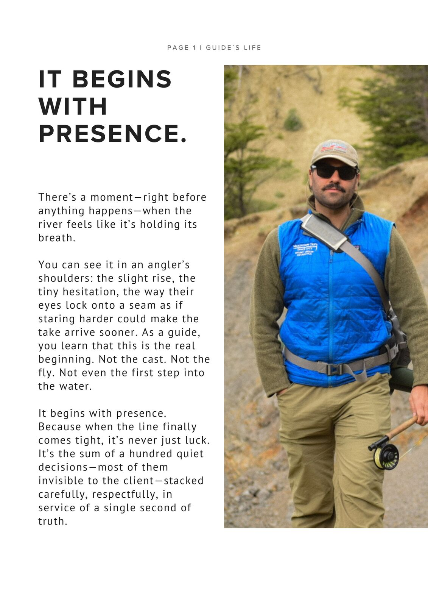
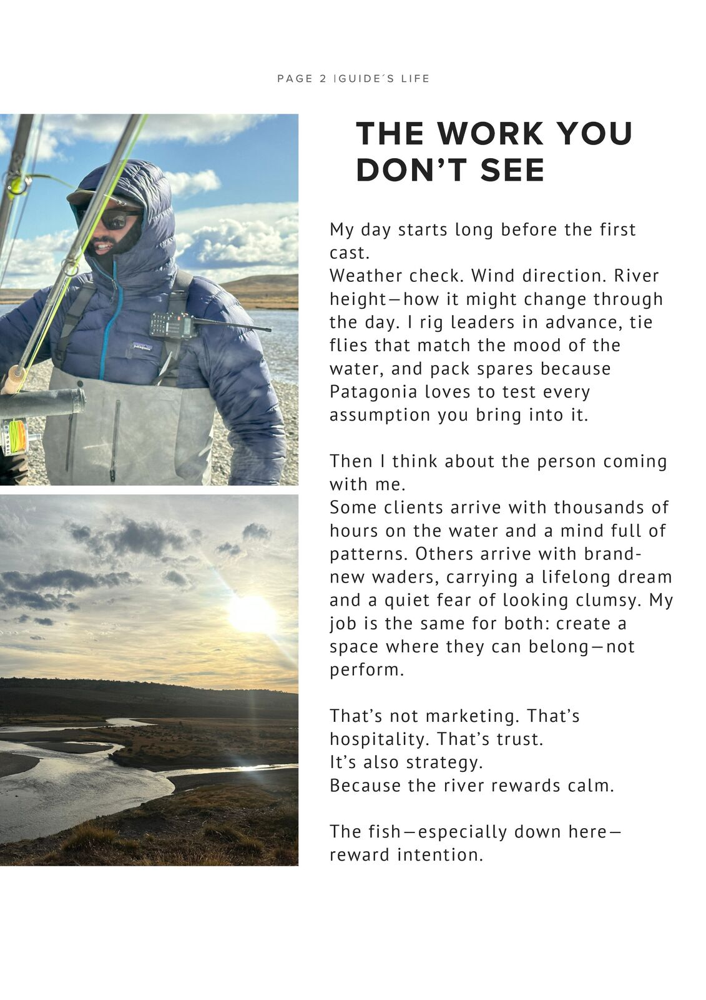
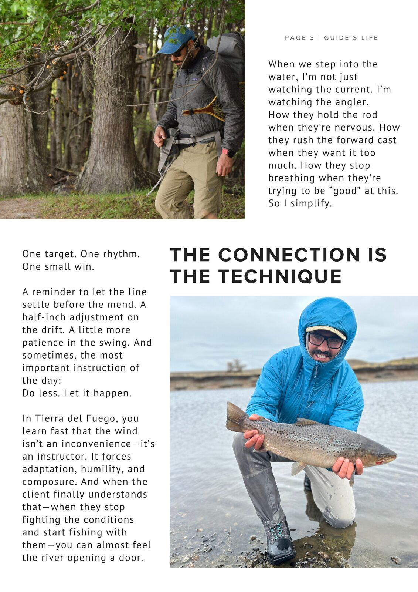
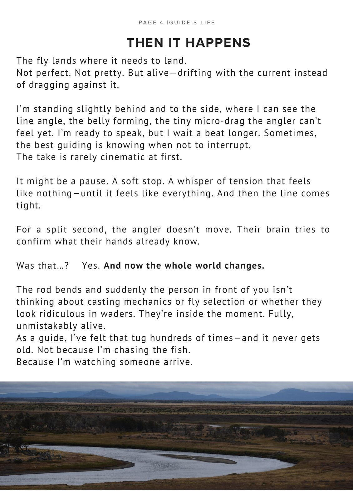
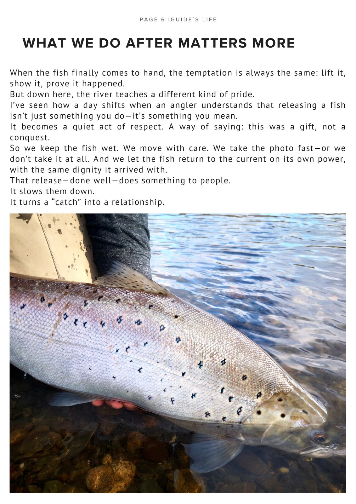
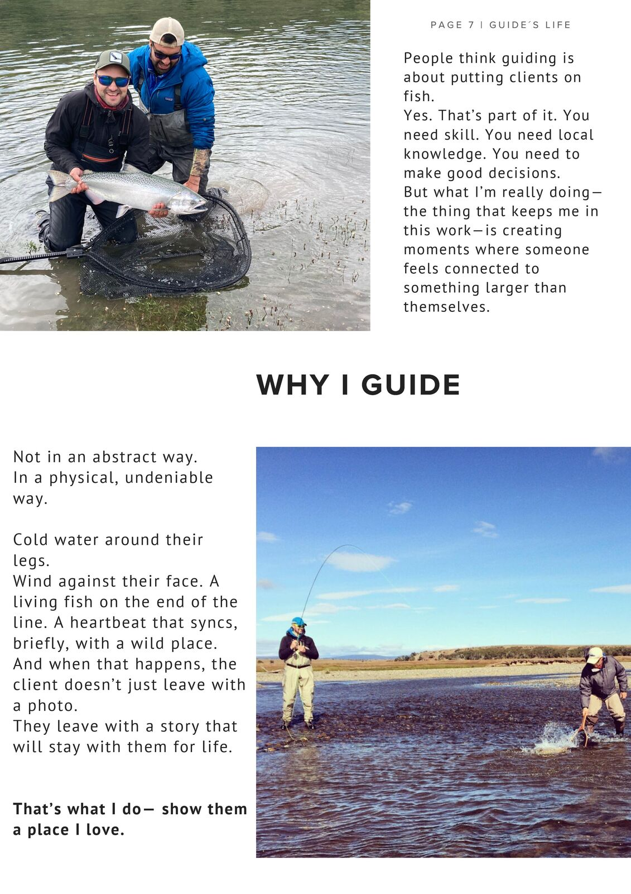
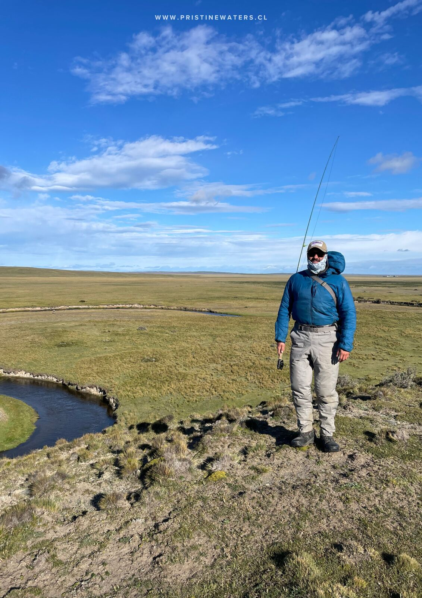

It Begins With Presence
There's a moment, right before anything happens, when the river feels like it's holding its breath.
You can see it in an angler's shoulders: the slight rise, the tiny hesitation, the way their eyes lock onto a seam as if staring harder could make the take arrive sooner. As a guide, you learn that this is the real beginning. Not the cast. Not the fly. Not even the first step into the water.
It begins with presence. When the line finally comes tight, it's never just luck. It's the sum of a hundred quiet decisions, most of them invisible to the client, stacked carefully, respectfully, in service of a single second of truth.

The Work You Don't See
My day starts long before the first cast.
Weather check. Wind direction. River height, and how it might change through the day. I rig leaders in advance, tie flies that match the mood of the water, and pack spares, because Patagonia loves to test every assumption you bring into it.


Then I think about the person coming with me.
Some clients arrive with thousands of hours on the water and a mind full of patterns. Others arrive with brand-new waders, carrying a lifelong dream and a quiet fear of looking clumsy. My job is the same for both: create a space where they can belong, not perform.
That's not marketing. That's hospitality. That's trust.
It's also strategy. Because the river rewards calm. The fish, especially down here, reward intention.
The Connection Is the Technique
When we step into the water, I'm not just watching the current. I'm watching the angler.
How they hold the rod when they're nervous. How they rush the forward cast when they want it too much. How they stop breathing when they're trying to be "good" at this. So I simplify. One target. One rhythm.

A reminder to let the line settle before the mend. A half-inch adjustment on the drift. A little more patience in the swing. And sometimes, the most important instruction of the day: do less, let it happen.
In Tierra del Fuego, you learn fast that the wind isn't an inconvenience, it's an instructor.
It forces adaptation, humility, and composure. And when the client finally understands that, when they stop fighting the conditions and start fishing with them, you can almost feel the river opening a door.
Then It Happens
The fly lands where it needs to land. Not perfect. Not pretty. But alive, drifting with the current instead of dragging against it.
I'm standing slightly behind and to the side, where I can see the line angle, the belly forming, the tiny micro-drag the angler can't feel yet. I'm ready to speak, but I wait a beat longer. Sometimes the best guiding is knowing when not to interrupt.
The take is rarely cinematic at first. It might be a pause. A soft stop. A whisper of tension that feels like nothing, until it feels like everything. And then the line comes tight.
For a split second, the angler doesn't move. Their brain tries to confirm what their hands already know. Was that it? Yes. And now the whole world changes.

The rod bends, and suddenly the person in front of you isn't thinking about casting mechanics or fly selection or whether they look ridiculous in waders. They're inside the moment. Fully, unmistakably alive.
As a guide, I've felt that tug hundreds of times, and it never gets old. Not because I'm chasing the fish. Because I'm watching someone arrive.
My Role in the Fight
This is where guiding becomes almost like choreography. Not control, support.
I'm coaching the rhythm: pressure, angles, when to give, when to hold. I'm reading the fish's intent through the rod curve and the line's vibration. I'm moving quietly to position the net without turning the moment into a scramble.
And all the while I'm managing something else too: emotion.

Big fish don't just pull line. They pull stories out of people. They pull old dreams to the surface. They pull out the kid inside the adult who forgot what pure joy feels like.
Some clients laugh. Some swear. Some go silent. Every reaction is valid, because it matters.
What We Do After Matters More
When the fish finally comes to hand, the temptation is always the same: lift it, show it, prove it happened.
But down here, the river teaches a different kind of pride.
I've seen how a day shifts when an angler understands that releasing a fish isn't just something you do, it's something you mean.
It becomes a quiet act of respect. A way of saying: this was a gift, not a conquest.

So we keep the fish wet. We move with care. We take the photo fast, or we don't take it at all. And we let the fish return to the current on its own power, with the same dignity it arrived with.
That release, done well, does something to people. It slows them down. It turns a catch into a relationship.
Why I Guide
People think guiding is about putting clients on fish.
Yes, that's part of it. You need skill. You need local knowledge. You need to make good decisions.
But what I'm really doing, the thing that keeps me in this work, is creating moments where someone feels connected to something larger than themselves.
Not in an abstract way. In a physical, undeniable way.
Cold water around their legs. Wind against their face. A living fish on the end of the line. A heartbeat that syncs, briefly, with a wild place.
And when that happens, the client doesn't just leave with a photo. They leave with a story that will stay with them for life.
That's what I do. Show them a place I love.